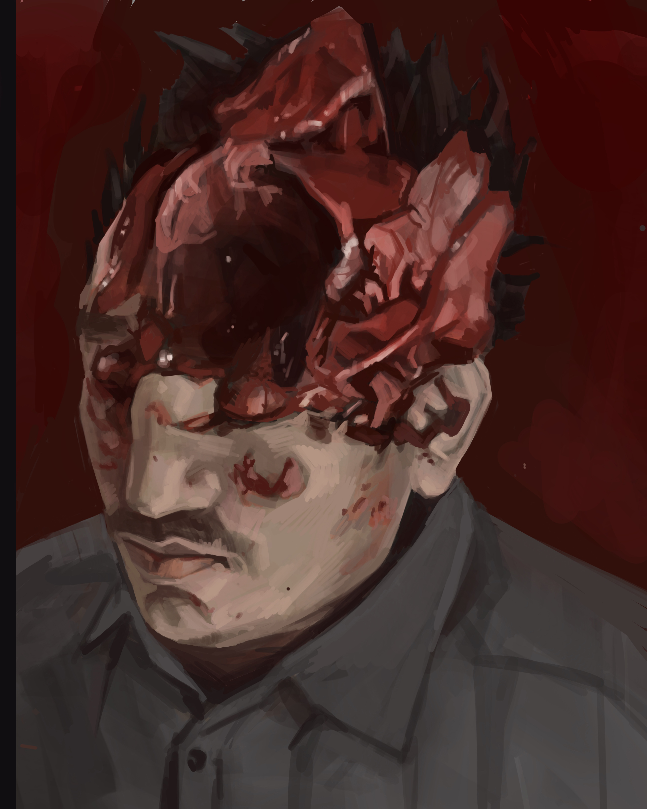

Rigor Mortis;
A Composition of Corpses
Honors 104 Final
Graphic Content Ahead
This project involves descriptions and digital paintings that depict mutilated corpses. For the morbidly curious, welcome. For those more sensitive to gore, you have been warned.
I also reccommend you read the section "Photo References & Ethics" before examining any external sources mentioned.
Portfolio
Introductions and Inquires
The object of inquiry I tackle in this project is death. Specifically,
my biggest interest surrounded how death is presented to the general public. As a result, my generative questions are as follows:
How do we construct texts or forms to address "death as public knowledge" (DAPK)?
How could/should we address the corpse within a DAPK text?
What is wrong with our current mode of addressing DAPK?
This project was deeply inspired by Feneon, and how his work extrudes death as public
knowledge with gore, comedy, and honesty. This project could be seen as furthering the work of Feneon,
but instead emphasizing detail instead of briefness.
Contextual Work
One of the phrases I will be using to develop this inquiry is “death as public knowledge.” I’d define this term as the
variety of forms we use to display a death to an audience significantly larger than close friends and family. My focus in
this inquiry is specifically individual suicides, but that doesn’t mean that death as public knowledge can’t cover topics
of group death. In fact, I'd argue that “death as public knowledge” tends to have a bias towards group death, as we tend to
find the quantity of death particularly noteworthy when addressing a massive group of strangers.
At the time in which Fénéon’s work was written, the most apparent textual evidence for addressing death as public knowledge
is via short blurbs in the weekly paper for “Le Matin.” Fénéon’s text exemplifies newspaper companies as a prevalent
institution used to generate death as public knowledge. One thing I’d like to point out is that the mode of addressing
death as public knowledge is deeply woven into larger bureaucratic institutions. As a result, the form it takes is dictated,
regulated and standardized by a massive amount of people, making the form itself somewhat rigid to change.
On a bit of a tangent, I’d also argue that “death as public knowledge” not only refers to the institutions that generate texts about corpses
(ie radio stations, local newspaper firms, television news stations, etc.) but also the larger general public that receives
such information about dead bodies. In this definition, the way the public responds to said institution-generated texts will
create a feedback loop that influences the institutions themselves. This highlights the idea that the institution appeals
directly to the expectations and desires of the public regarding how we address death. However, simultaneously. the
institutions are also the ones that shape public perception of death, which raises the question of; who is truly
controlling the form, the public or the institution? However, though this is an intriguing proffer, my focus
here is mostly on the texts themselves and the authors that generated them, rather than these larger man-made
“machines” that pull the strings behind these texts.
The particular forms I’m generating aren’t entirely dictated by the institutions, yet they still play a significant role.
More on this in the “on form” section.
(Considering Death as Public Knowledge will be used a lot, to avoid repetitiveness I will be abbreviating it to DAPK from now on)
Another word I include in this inquiry is gore. Gore, in my definition, is primarily a physical quality. Gore in its physical
form usually can manifest as; a)large amounts of blood and displaced flesh on the corpse, or b)apparent holes or gashes in
the flesh that significantly disfigures the corpse.
Yet another word I throw around haphazardly in this text is the phrase “modern day.” Simply because my insight is referring
primarily to my own life experience, the time period I am referring to is from 2000-2021. In other words, “modern day” refers to
the time in which I, Dawson Gyllenhammer, have existed on this Earth.
Obituaries & Paintings;
Defending the Medium
The most prevalent form this text took is that of an “obituary”. According to the Oxford English Dictionary,
an obituary is defined as “A record or announcement of a death, esp. in a newspaper or similar publication; (in later use) (also) spec.
an appreciation appearing in a newspaper or news broadcast, of an eminent or well-known person who has recently died, typically including
a brief biography.” However, I’d define obituary on slightly broader terms, in attempts to oust our current, more narrow understanding of
what an obituary can be. I’d define an obituary to be a text generated as the result of a corpses discovery, OR as a prelude to the existence
of a corpse. It is a text which intends to address this corpse in any way it sees fit. It is, for lack of better terms, an “ode to a corpse.”
By generating this definition, I am intentionally omitting the requirement of a “biography.”
The main reason I chose the obituary form is because obituaries are loaded with assumptions on how they should look, and how they should discuss
the corpse at hand. By choosing obituaries, I am also choosing a DAPK form where the institution has far less power over how the text can
be written. This is because there is a wide range of individuals that have the ability to write and submit these texts to a (digital or print) newspaper,
being the family, friends, or journalists. However, I want to expand this author list as well in this inquiry.
Another form I decided to use was the form of digital paintings. I created these paintings using my iPad and Apple Pencil,
and the intention of these images was to give homage to the typical portrait you see at the top of a modern-day obituary. However,
instead of presenting these individuals in life, I present these corpses in death. I did this specifically to proffer the fact that
the discovery of a corpse is an integral part of why an obituary exists in the first place. Another reason I chose the form of digital
paintings is because, unlike photography (which is a mode of “capturing”), the painting process is a very long, constructive process where
you reconstruct the face/body from simple to complex shapes. Much like the stages of grief, I was able to sit with and process the dead
body as I painted it. I actually found that my level of discomfort with the gore I was viewing significantly dropped once I accepted what
I was looking at and instead viewed it as a collection of shapes and values I had to replicate.
However, the main reason for both forms (painting and obituary) is that they present to the viewer an “alternate text” to view which is
meant to insight comparison between modern-day obituaries and these forms, to assess our own peculiar emotional reactions. As mentioned
before, this is in essence a re-proffer of Fénéon’s text, and all the wonderful curiosities his text allows.
Oxford English Dictionary. (2021). Obituary, n. and adj. Retrieved March 17, 2021, from https://www-oed-com.ezproxy.library.wwu.edu/view/Entry/129612?redirectedFrom=obituary#eid
Obituary on Marie Couderc
Age: 26 Location: Saint-Ouen Condition: Pristine
“Again and again Mme Couderc, of Saint-Ouen, was prevented from hanging herself from her window bolt. Exasperated, she fled across the fields.” (Fénéon 2007, pg 15)”

Photography from editor Léo Laurent at The Untimely News
Dear Earth and its foul inhabitants. I have finally done what all of you have sought to prevent.
I have ended my miserable life in your city tonight, not because I wish to burden you souls, but because there is
far too much pain to go on like this.
For years I have lived alone. For years I wake up and wonder when the sun will rise in a way that actually satiates me.
For years I wake up and wonder where everyone went, everyone that I knew so dear to me. There is no color in this world
anymore, let it be known.
I do want to hold some appreciation for those who tried to stop me. You let in a narrow light that I had never seen before.
But alas it was not enough. This world is too big and too dark for your candle to resonate.
This action, this death of mine, was not unfounded. It has come to my attention over the last few weeks
that I was with child.
A miracle is hardly what I would call it. The father is no more than a lover of mine, but that is
not the problem at hand. I simply could not live with myself if I brought another innocent living thing into this cruel,
relentless world. And, as promised, I did not go on living in this world. I tried to discard of the life inside me, by
vulgar means even, but I had to be sure, I had to be. A parent like me would break a child early, it wouldn’t be right.
It just wouldn’t be right.
I do not ask for a funeral, I do not ask for anything. Let me rot through the noose for all I care. All I ask is that you
let this be my final call out to the world, to let them know that the flame finally died out in the wind. To those I love,
I’m sorry. Your love could not hold me up, I only caved in beneath you.
-Written by Marie Couderc, on a note left at her bedside.
Fénéon, Félix, & Sante, Luc (2007). Novels in three lines. New York Review Books.
theync.com , retreived March 5, 2021 from theync.com
Obituary on John Doe
Age: Unknown Location: Estérel Condition: Tarnished
“A hanged man, there two months, has been found in the Estérel mountains. Fierce birds
had completely disfigured him with their beaks. (Fénéon 2007,pg 16)”
Photography from editor Eric Dubois at
The Untimely News.
An unidentified man was discovered in the Estérel mountains, hanging from a tree branch. Assessment of the
body shows that his neck was not sufficiently snapped during the hanging, which means the mode of death was primarily
suffocation. He was likely in agony in the last few moments of his life, wondering if his family will ever find him this
deep in the forest. This hanging does seem to be self-inflicted, and was likely performed by climbing the tree, tying off
the rope on a higher branch using a fisherman’s knot, taking a deep breath, and jumping. However, if this death was a homicide,
the corpse will likely never find justice.
The man appears to be middle aged and Caucasian, but his identity is hard to detect as birds have pecked the majority of flesh off of his
face. We would include eye color as an identity descriptor, but it seems that a bird has pecked and chewed fairly deep into his sockets, and
the remaining bits of his popped eyes are too blood-shot to identify.
My fellow journalists and I were surprised at how intact the rest of the body was. Considering it was up there for an estimate of two months,
the body should be rotted to the core. A normal situation would leave the man with no teeth, rotted gums, and practically no skin attached
to his bones. However, since it is particularly cold up in these high mountain altitudes, the weather likely froze the corpse over the last
leg of the winter. This allowed for significant preservation of the body and neck, at least until spring started.
The process for getting this man off of the tree was particularly arduous. Upon smelling the rotting flesh and noticing the dark mass
hovering in the trees, I sent a man up to cut the corpse down. During its 10-meter descent to the forest floor, the body landed on its head,
which caused a significant amount of brain matter to pop out of its already exposed skull. When we dragged the corpse to better lighting,
there was a significant pool of blood exiting the fall wound. However, we decided to keep the blood pool in frame as we found it added some
drama to the image.
For anyone with missing family members looking to further identify this man, the now barely intact lump of flesh was sent in a cart down to
the village at the base of Estérel, where he is to be buried in an unmarked, fairly shallow grave. Reporters have been informed by the
townspeople that families can dig up the remains for closure, and they only ask that they re-bury the body upon leaving so the scent doesn’t
travel too far into town. However, those desperately needing closure for missing family shouldn’t wait too long, as a nearby shop complained
that the grave is an eyesore and are willing to pay someone to have the corpse removed and charred to ash in the coming weeks.
-Dawson Gyllenhammer, reporter from
The Untimely News
Fénéon, Félix, & Sante, Luc (2007). Novels in three lines. New York Review Books.
theync.com , retreived March 5, 2021 from theync.com
Obituary on Marc Colombe
Age: 37 Location: Rouen Condition: Poor
“M. Colombe, of Rouen, killed himself with a bullet yesterday. His wife had shot three of them at him in March, and their divorce was imminent. (Fénéon 2007, pp. 19).”

Color Photography courtesy of Eloise Colombe
After taking the bullet like a coward, Marc Colombe managed to finally succeed in putting the entire Colombe name to shame.
Not only was he a good-for-nothing deadbeat alchoholic, but he also managed to blow his brains out all over my brand-new linens.
Marc Colombe, my husband, managed to leave this world just as he entered it; unwanted. Or at least I sure as hell didn’t want him,
and his 3-month old child (my precious darling Juliette) will never have to go through the burden of bonding with this pitiful fool. He
used my fathers hunting rifle to do the deed, which I now have to scrub all this dried blood off of. Seems ironic he used this rifle, as
I had fired a few rounds at him myself using this elegant piece of machinery.
Let me paint a picture for you of Marcs home life, given you are blessed with the gift of never having to meet this man on the mortal plane
ever again. Marc was a humble man, mostly because he never had enough money. We never had nice things, and he would never dare get anything
nice for me. When he was with friends, all he would do is drink with them, but he would mostly just keep to himself the whole time. He never
let anyone into that stupid little head of his (which is ironic, as his head is now an integral part of my kitchen floor.)
When I found the wreckage after coming home last Thursday, I forced back my burst of glee, fighting against the grin forming on my face.
A smiling wife that should be grieving is bad news, and I don’t want that kind of attention. As a result, I played the hopeless damsel
whenever other people were around. I couldn’t stand the smell of this man alive or dead, so I made sure to play the best damsel
I could when I asked a flat mate to help me drag his body into the street. I was pretty impressed with myself, successfully turning all
of my seething anger into fairly convincing helpless sobs.
Nonetheless, cleaning up after this man was always a hassle, and now even more so. I had to scoop up so many pieces of brain off of the floor
and use so many of our towels to collect the blood pooling around his gaping headwound. Thankfully there were no maggots yet, I caught him
quick enough for that at least. But god it was such a chore. Nonetheless, I couldn’t help but think that with every brain bit I threw out,
I was one step closer to never having this man in my life again.
There will be no funeral for Marc Colombe. There will be no ceremony, no moment to grieve. I won’t give him the satisfaction. And as for my
husband, may he forever writhe sleeplessly in the jowls of Satan himself. Good riddance.
- Written by Eloise Colombe, wife of Marc Colombe. Submitted to The Unitmely News April 8th, 1906.
Fénéon, Félix, & Sante, Luc (2007). Novels in three lines. New York Review Books.
r/eyeblech , retreived March 13, 2021 from https://www.reddit.com/r/eyeblech/
Honorable Mentions
Below is a list of quotes that exemplify deaths in a similar vein to those above. Since this project requires "copious textual evidence,"
I decided I would list a myriad of quotes that reflect similar modes of death, be it suicides, hangings, and an ominous inclusion of "the forest"
as a secondary character in these obituaries.
“The photographer Joachim Berthoud could not get over the death of his wife. He killed himself in Fontanay-sous-Bois.” (Fénéon 2007, pp. 4)”
“If my candidate loses, I will kill myself,” M. Bellavoine, of Fresquienne, Seine-Inferieure, had declared. He killed himself (Fénéon 2007, pp.5).”
“Despondent owing to the bankruptcy of one of his debtors, M. Arturo Ferretti, merchant of Bizerte, killed himself with a hunting rifle.” (Fénéon 2007, pp.5).”
"Through negligence Launois, a servant, killed his master, M. Paul Lebron, of Grauves, Marne, whose rifle he was cleaning.” (Fénéon 2007pg 16)
“The corpse of a sixtyish Dorlay hung from a tree in Arcueil, with a sign reading, “Too old to work.” (Fénéon 2007, pp. 16)
“A former merchant Frédéric de Desechel, of Rue d’Alésia, Paris, killed himself in the Clamart woods. The reason: stomach pains (Fénéon 2007, pp. 21).”
“A farmer of the vicinity of Meaux, Hippolyte Deshayes, married and the father of four, has hanged himself; no one knows why (Fénéon 2007, pp. 29).”
“A merchant of the Courbevoie, M. Alexis Jamin, who had had enough of his stomach troubles, blew his brains out (Fénéon 2007, pp. 31).”
"Sixty year old M. Bonw of Andigné, Sarthe, had, when drunk, so badly beaten his maid that he was to be arrested. Irked, he hanged himself.” (Fénéon 2007, pp. 35).”
Fénéon, Félix, & Sante, Luc (2007). Novels in three lines. New York Review Books.
Conclusions, Assumptions, and Other Mutterings
One key assumption I wanted to upend in this particular text is our assumption that it is taboo to discuss the mode of death in
explicit detail within DAPK texts. Though mode of death is often included, we (citizens and institutions) often accept that
leaving out explicit information about the death itself is done out of respect for the family and friends affected by the death.
However, it feels strange that we hold on to this assumption, as the text is inherently being written about a corpse. Many modern-day
publications publish obituaries as a list of triumphant life achievements, rather than focusing on the fact that said individual
is no longer alive and how devastating that is. Let me phrase it like this; A body must have a particular disposition in order to
be pronounced dead, with some dispositions being far more gruesome than others. The writing of an obituary comes directly as a
result of someone finding a body under such a disposition, and yet, to include specific details about this disposition in the
obituary is seen as deeply offensive. To write a text where the clear inspiration of the text isn’t addressed is clearly grounded
in avoidance, and it arguably turns death into a sort of abstract “happening” that is hard to materialize in the minds of those who
read it. If you’re writing a biography, just call it a biography. But treating obituaries as if they can ONLY be biographical does
all of us a disservice, especially when we are grieving.
Adding to this point, one could argue that writing an obituary that includes explicit details about the death or the discovery of
the body could be immensely cathartic. Writing is, in essence, an ability to materialize the internal on to paper, and this process
of writing out the most disturbing components of the corpse can be a fantastic mode of coping with trauma. Obviously, our discomfort
with this is amplified by the fact it is a DAPK text, but it makes me wonder what the world would look like if we weren’t so afraid to
externalize our traumas to others (that is, assuming the event was genuinely traumatic instead of performative.)
Another thing I wanted to upend was the assumption that obituary texts are inherently produced by someone with an intimate proximity
to the corpse. In modern-day obituaries, the author, or the perpetrator of form, is often depicted as a warm, caring relative (or
journalist) that expresses the idealized life of the corpse onto paper. This is the “biography” component of an obituary, and it is
clearly an overly sentimental depiction of the corpse. But an obituary written by a fuming, bitter enemy, or an obituary written by an
indifferent stranger, that is a different beast entirely.
Another thing I wanted to tackle in this alternate text was intentionally dissolving words like “suicide note” and deciding to
call such forms an obituary (specifically referencing Marie Couderc). I did this to push the idea that all “odes to corpses”
should be assessed with equal weight, no matter who wrote it or when it was written. I see “suicide note” as a form of pigeonholing
texts, as it implies that there is more tragedy and honesty involved in a suicide note than in an obituary.
Claims;
or Concise Re-Utterances of the Above
1) DAPK texts, specifically obituaries, do not need a warm, caring author. They can be written by anyone who experienced the corpse or knew of the corpse, regardless of that persons perception of the individual before or after life. A bitter, angry, or indifferent obituary is a legitimate form of DAPK.
2) DAPK texts that describe or depict the death in greusome detail should not be uncommon, as it is what inspired the text. In other words, all DAPK texts should be a direct result of discovering a corpse, and hence the discovery should be a component of the writing in some way.
3) If the intention was to address the public, all DAPK forms should be called as they are, instead of being pigeonholed into other terms.
4) Making DAPK texts gory could be cathartic, and it could be a lesson in our collective compfortability to publicly demonstrate trauma.
The Process for generating these paintings was by far the most disturbing component of this project, as I wanted to ground
my paintings in realism. As a result, I decided to generate my paintings based not only off of quotes from Feneon's text, but also based
off of references of real-life dead bodies.
To find images of actual gore and corpses is not an easy task, as censorship of such dispositions is rampant on the internet.
As a result, I turned to shock sites in order to gather these
images. Shock sites are generally seen as internet hubs for deeply disturbing content, and these sites are not to be entered lightly.
The two main shock sites I used for this project were "theync.com", and a subreddit (reffering to a community within the social media
app reddit) called "r/eyeblech". Now, I do not want to include the links directly, as I do not want to encourage anyone to view these
communities without knowing what they're getting into. These sites are very
disturbing, not only because they contain videos and imagery of corpses, but because of their juxtoposition with videos and images of fetish pornography and
sometimes videos of rape/sexual assault. With that being said, the links below are simply links to the images I found on the site, which will not re-direct you to the site itself. That being said, these images are very disturbing, and I do not reccomend clicking on these links if you are sensitive to gore
(Shock Site) Reference Photo for "John Doe"
Source: theync.com , retreived March 5, 2021 from theync.com
(Shock Site) Reference Photo 1 for "Marie Couderc"
Source: theync.com , retreived March 5, 2021 from theync.com
(Feneon) Reference Photo 2 for "Marie Couderc"
Source: Fénéon, Félix, & Sante, Luc (2007). Novels in three lines., 59. New York Review Books.
(Shock Site) Reference Photo for "Marc Colombe"
Source: https://www.reddit.com/r/eyeblech/
It does come to my attention that, considering these are images of actual corpses, there is an ethical weight that comes to these images. The names of these
individuals were never listed on the websites, but nonetheless these individuals also had families and friends, and now a painting based off of their dead
body is on another public website on the internet, accompanied by a fictitious narration that elaborates on how they died. Insterestingly, this moral dillema is in essence a microcosm
of the project itself, as this form in which I reference death has an inseperable tie to those in close proximity to the corpses at hand.
However, I'd argue that the post-modern demeanor of these images amplifies this anxiety more than in Feneon's work, as those close to these corpses are likely still roaming
this Earth, while those close to the corpses in Feneon's text are forever locked in modernity.
References
Fénéon, Félix, & Sante, Luc (2007). Novels in three lines. New York Review Books.
r/eyeblech , retreived March 13, 2021 from https://www.reddit.com/r/eyeblech/
theync.com , retreived March 5, 2021 from theync.com
Oxford English Dictionary. (2021). Obituary, n. and adj. Retrieved March 17, 2021, from
https://www-oed-com.ezproxy.library.wwu.edu/view/Entry/129612?redirectedFrom=obituary#eid

{kind=link}
{kind=link}
{kind=link}
{kind=link}